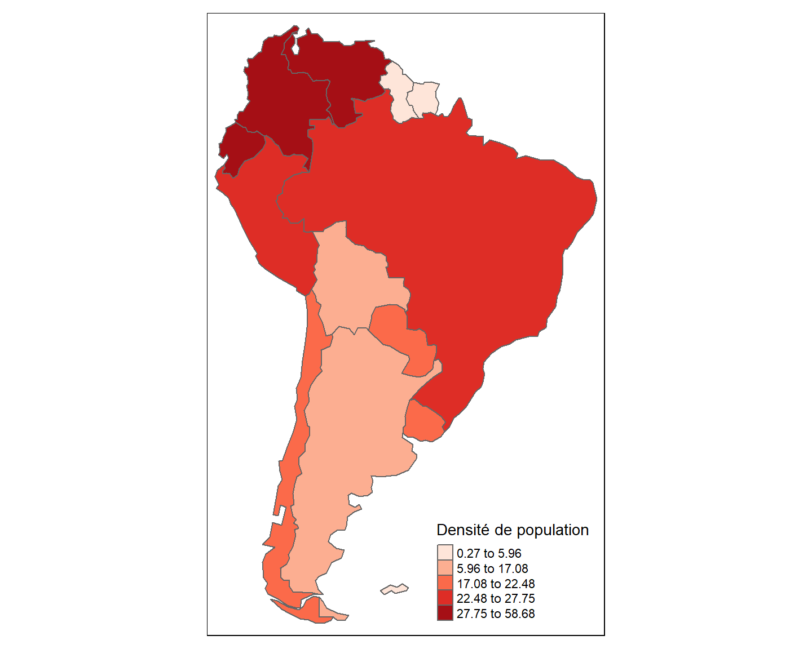
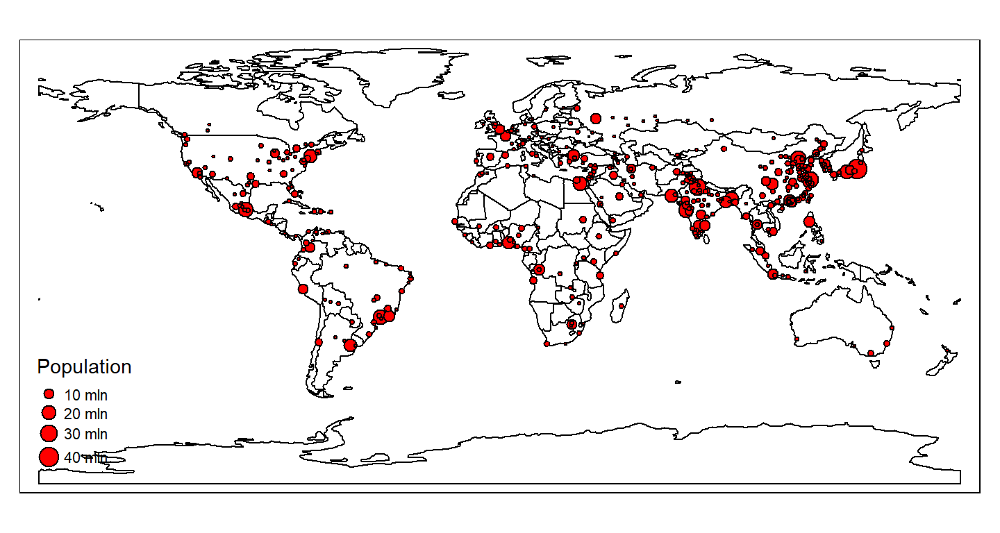
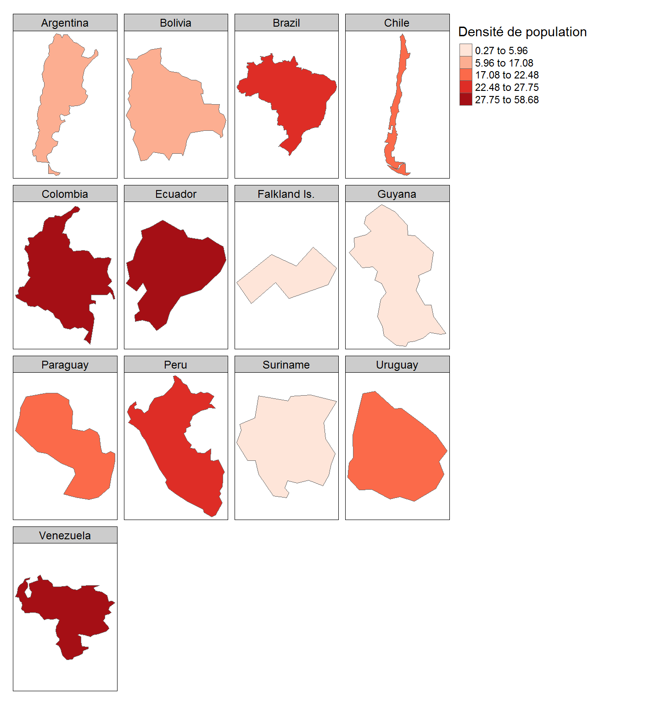

6.2 Exercices
Dans cette section, vous mettrez en pratique certains concepts vus dans la section leçon de ce module. Bien que la réponse à chaque question soit disponible, il est très important de tenter d’y répondre par vous même!
Cette série d’exercices utilise des données comprises avec la bibliothèque tmap. En particulier, vous utiliserez les données World, metro, et land. Charger ces données dans votre session R:
data(World)
data(metro)
data(land)Question 1
a) Quelle est la géométrie des données World, et quels sont leurs attributs?
Réponse
La géométrie est donnée par la fonction st_geometry() de la bibliothèque sf.
st_geometry(World)Geometry set for 177 features
Geometry type: MULTIPOLYGON
Dimension: XY
Bounding box: xmin: -180 ymin: -89.9 xmax: 180 ymax: 83.65
Geodetic CRS: WGS 84
First 5 geometries:MULTIPOLYGON (((61.21 35.65, 62.23 35.27, 62.98...MULTIPOLYGON (((16.33 -5.877, 16.57 -6.623, 16....MULTIPOLYGON (((20.59 41.86, 20.46 41.52, 20.61...MULTIPOLYGON (((51.58 24.25, 51.76 24.29, 51.79...MULTIPOLYGON (((-65.5 -55.2, -66.45 -55.25, -66...
Les données World sont donc des multipolygones. Chaque multipolygone correspond à un pays de la planète. Nous pouvons connaître le nom des attributs en utilisant la fonction names()
names(World) [1] "iso_a3" "name" "sovereignt"
[4] "continent" "area" "pop_est"
[7] "pop_est_dens" "economy" "income_grp"
[10] "gdp_cap_est" "life_exp" "well_being"
[13] "footprint" "inequality" "HPI"
[16] "geometry" Les différents attributs sont des caractéristiques générales des pays comme leur nom (name), leur continent (continent), leur superficie (area), la taille estimée de leur population (pop_est), la densité estimée de leur population (pop_est_dens), l’espérance de vie de leur population (life_exp), etc.
b) Déterminer les dix premières entrées des attributs iso_a3 et name des données World.
Réponse
World[1:10, c("iso_a3", "name")]Simple feature collection with 10 features and 2 fields
Geometry type: MULTIPOLYGON
Dimension: XY
Bounding box: xmin: -180 ymin: -89.9 xmax: 180 ymax: 49.04
Geodetic CRS: WGS 84
iso_a3 name
1 AFG Afghanistan
2 AGO Angola
3 ALB Albania
4 ARE United Arab Emirates
5 ARG Argentina
6 ARM Armenia
7 ATA Antarctica
8 ATF Fr. S. Antarctic Lands
9 AUS Australia
10 AUT Austria
geometry
1 MULTIPOLYGON (((61.21 35.65...
2 MULTIPOLYGON (((16.33 -5.87...
3 MULTIPOLYGON (((20.59 41.86...
4 MULTIPOLYGON (((51.58 24.25...
5 MULTIPOLYGON (((-65.5 -55.2...
6 MULTIPOLYGON (((43.58 41.09...
7 MULTIPOLYGON (((-59.57 -80....
8 MULTIPOLYGON (((68.94 -48.6...
9 MULTIPOLYGON (((145.4 -40.7...
10 MULTIPOLYGON (((16.98 48.12...Nous comprenons ainsi que l’attribut iso_a3 correspond à un code standardisé abrégeant le nom des pays.
c) Utiliser le style col_blind pour illustrer la carte du monde. N’ajouter pas de légende.
Réponse
tm_shape(World) + tm_polygons(col="name") +
tm_style("col_blind") +
tm_layout(legend.show = FALSE)
Vous devriez voir afficher un message d’erreur quant au nombre de pays dépassant le nombre maximal de couleurs pouvant être illustrées. Ceci a peu de conséquences pour cette carte puisque peu de pays adjacents ont la même couleur et que ceux-ci sont délimités par des bordures noires nous permettant de les distinguer.
d) Produire une carte identique à la carte de la question c mais représentant uniquement les pays d’Afrique.
Réponse
Isoler le continent africain:
Afrique <- World[World$continent == "Africa",]Produire une carte de l’Afrique avec le style col_blind et sans légende.
tm_shape(Afrique) + tm_polygons(col="name") +
tm_style("col_blind") +
tm_layout(legend.show = FALSE)
Notez que la bibliothèque tmap permet de minimiser le nombre de polygones adjacents illustrés avec la même couleur. Pour se faire, il s’agit de définir col = MAP_COLORS en argument à la fonction tm_polygons().
tm_shape(Afrique) + tm_polygons(col="MAP_COLORS") +
tm_style("col_blind") +
tm_layout(legend.show = FALSE)e) Produire une carte de l’Afrique sur laquelle les pays sont identifiés par leur code “iso_a3”.
Réponse
Nous reprenons d’abord la carte de l’Afrique produire en d. Puis, nous ajoutons le code “iso_a3” des pays en utilisant la fonction tm_text():
tm_shape(Afrique) + tm_polygons(col="MAP_COLORS") +
tm_style("col_blind") +
tm_layout(legend.show = FALSE) +
tm_text("iso_a3", size = 0.6)f) Produire une carte de l’Amérique du Sud où la couleur de chaque pays représente sa densité de population (“pop_est_dens”). Utiliser le style quantile pour classer les valeurs de densité, et la palette Reds de la bibliothèque RColorBrewer. Assurez-vous que la légende porte le titre “Densité de population”.
Réponse
Dans un premier temps, nous devons isoler les pays de l’Amérique du Sud.
AS <- World[World$continent == "South America",]Ensuite, nous devons créer la palette de couleur avec la fonction brewer.pal(). Puisque le style quantile sépare les valeurs de densité en cinq classes, la palette doit comprendre cinq couleurs.
pal <- brewer.pal(n=5, "Reds")Nous pouvons maintenant produire la carte:
tm_shape(AS) +
tm_polygons(col = "pop_est_dens",
palette = pal,
style = "quantile",
title = "Densité de population") g) Produire une carte à panneaux multiples de la densité de population en Amérique du Sud. Votre carte doit comprendre les caractéristiques suivantes:
- Chaque panneau de la carte doit correspondre à un pays identifié par son nom.
- La carte doit comprendre quatre rangées de panneaux.
- Les pays doivent être illustrés avec un facteur d’échelle de cinq.
Réponse
Nous utilisons la fonction tm_facets() pour produire une carte à panneaux multiples:
tm_shape(AS) +
tm_polygons(col = "pop_est_dens",
palette = pal,
style = "quantile",
title = "Densité de population") +
tm_facets(by = "name",
nrow = 4,
scale.factor = 5
)
h) Utiliser les arguments de la fonction tm_layout() pour modifier l’apparence de la carte à panneaux multiples de la question g. Plus précisément, ajouter les caractéristiques suivantes:
- Une vignette de hauteur 2 pour chaque facette.
- Une couleur de fond blanc pour chaque vignette.
- Un texte de taille 0.9 sur chaque vignette.
- Une légende encadrée et positionnée à l’extérieure à gauche des panneaux.
- Une légende dont les chiffres sont arrondis à l’unité près, et séparés par le symbole “-”.
Réponse
Nous devons utiliser les différents arguments de la fonction tm_layout() pour préciser les caractéristiques demandées.
tm_shape(AS) +
tm_polygons(col = "pop_est_dens",
palette = pal,
style = "quantile",
title = "Densité de population") +
tm_facets(by = "name",
nrow = 4,
scale.factor = 5
)+
tm_layout(panel.label.height = 2,
panel.label.size = 0.9,
panel.label.bg.color = "white",
legend.outside = TRUE,
legend.outside.position = "left",
legend.format = list(format = "f", digits = 0, text.separator = "-"),
legend.frame = TRUE)
Question 2
a) Quelle est la géométrie des données metro, et quels sont leurs attributs?
Réponse
Nous utilisons la fonction st_geometry() pour connaître la géométrie des données metro:
st_geometry(metro)Geometry set for 436 features
Geometry type: POINT
Dimension: XY
Bounding box: xmin: -123.1 ymin: -37.81 xmax: 174.8 ymax: 60.17old-style crs object detected; please recreate object with a recent sf::st_crs()Geodetic CRS: WGS 84
First 5 geometries:POINT (69.17 34.53)POINT (3.042 36.75)POINT (13.23 -8.837)POINT (-58.4 -34.61)POINT (-64.18 -31.41)Les données metro sont donc composées de points.
Les attributs sont donnés par la fonction names():
names(metro) [1] "name" "name_long" "iso_a3" "pop1950"
[5] "pop1960" "pop1970" "pop1980" "pop1990"
[9] "pop2000" "pop2010" "pop2020" "pop2030"
[13] "geometry" Les différents attributs correspondent aux tailles des populations des métropoles du monde à différentes années et leur projection pour l’année 2030.
b) Déterminer les dix premières entrées des attributs name et pop2020 des données metro.
Réponse
metro[1:10, c("name","pop2020")]old-style crs object detected; please recreate object with a recent sf::st_crs()Simple feature collection with 10 features and 2 fields
Geometry type: POINT
Dimension: XY
Bounding box: xmin: -64.18 ymin: -37.81 xmax: 153 ymax: 40.18
Geodetic CRS: WGS 84
name pop2020 geometry
2 Kabul 5721697 POINT (69.17 34.53)
8 Algiers 2835218 POINT (3.042 36.75)
13 Luanda 6836849 POINT (13.23 -8.837)
16 Buenos Aires 15894307 POINT (-58.4 -34.61)
17 Cordoba 1562509 POINT (-64.18 -31.41)
25 Rosario 1453814 POINT (-60.64 -32.95)
32 Yerevan 1023703 POINT (44.51 40.18)
33 Adelaide 1320783 POINT (138.6 -34.93)
34 Brisbane 2388517 POINT (153 -27.47)
37 Melbourne 4500501 POINT (145 -37.81)c) En utilisant les données metro et World, créer une carte du monde sur laquelle les métropoles sont représentées par un cercle dont le diamètre est proportionnel à la taille de sa population en 2020. La carte doit comprendre les éléments suivants:
- Chaque métropole est illustrée par un cercle rouge de bordure noire.
- La légende porte le nom “Population”.
- La carte du monde est blanche et seules les frontières noires entre les pays y apparaissent.
Réponse
Nous utilisons la fonction tm_borders() pour illustrer les frontières des pays, puis, nous utilisons la fonction tm_symbols() pour illustrer les métropoles.
tm_shape(World)+
tm_borders(col="black")+
tm_shape(metro)+
tm_symbols(col="red",
border.col = "black",
size = "pop2020",
legend.size.show = TRUE,
legend.size.is.portrait = TRUE,
title.size = "Population")Question 3
a) Les données land forment un objet de classe stars. C’est un objet matriciel composé de plusieurs couches d’attributs. Déterminer les couches comprises dans land.
Réponse
Nous utilisons la fonction names() pour déterminer le nom des couches (attributs) des données land:
names(land)[1] "cover" "cover_cls" "trees" "elevation"Pour avoir plus d’informations sur l’objet land et connaître les facteurs possibles pour chaque attribut, nous pouvons simplement écrire land dans le terminal R:
landstars object with 2 dimensions and 4 attributes
attribute(s):
cover
Water bodies :393060
Snow / Ice : 61986
Herbaceous : 21377
Tree Open : 16171
Sparse vegetation: 12247
Cropland : 11658
(Other) : 66701
cover_cls trees
Water :393060 Min. : 0
Snow/ice : 61986 1st Qu.: 0
Forest : 48851 Median : 0
Other natural vegetation : 32611 Mean : 16
Bare area/Sparse vegetation: 26904 3rd Qu.: 19
Cropland : 17843 Max. :100
(Other) : 1945 NA's :393060
elevation
Min. :-412
1st Qu.: 218
Median : 608
Mean :1140
3rd Qu.:1941
Max. :6410
NA's :389580
dimension(s):
from to offset.xmin delta.xmax
x 1 1080 -180 0.333333
y 1 540 90 -0.333333
refsys point x/y
x +proj=longlat +ellps=WGS8... NULL [x]
y +proj=longlat +ellps=WGS8... NULL [y]La couche cover illustre la couverture terrestre et comprend 20 catégories différentes.
levels(land$cover) [1] "Broadleaf Evergreen Forest"
[2] "Broadleaf Deciduous Forest"
[3] "Needleleaf Evergreen Forest"
[4] "Needleleaf Deciduous Forest"
[5] "Mixed Forest"
[6] "Tree Open"
[7] "Shrub"
[8] "Herbaceous"
[9] "Herbaceous with Sparse Tree/Shrub"
[10] "Sparse vegetation"
[11] "Cropland"
[12] "Paddy field"
[13] "Cropland / Other Vegetation Mosaic"
[14] "Mangrove"
[15] "Wetland"
[16] "Bare area,consolidated (gravel,rock)"
[17] "Bare area,unconsolidated (sand)"
[18] "Urban"
[19] "Snow / Ice"
[20] "Water bodies" La couche cover_cls illustre de façon simplifiée la couverture terrestre en regroupant les 20 catégories précédentes en 8 catégories différentes.
levels(land$cover_cls)[1] "Forest"
[2] "Other natural vegetation"
[3] "Cropland"
[4] "Wetland"
[5] "Bare area/Sparse vegetation"
[6] "Urban"
[7] "Snow/ice"
[8] "Water" La couche trees illustre le pourcentage de couverture forestière par pixel. Finalement, la couche elevation représente l’élévation en mètres.
b) Utiliser la palette de couleur Greens de la bibliothèque RColorBrewer pour produire une carte du pourcentage de couvert forestier. De plus, la carte doit comprendre les éléments suivants:
- Six classes de pourcentage de couvert.
- Un titre principal “Pourcentage de courvert forestier” de taille 1.
- Une légende extérieure à la carte, située sous la carte, horizonale et sans titre.
- Une légende dont les chiffres sont séparés par le symbole “-”.
Réponse
Nous utilisons la fonction tm_raster() pour illustrer la couche trees de l’objet land. De plus, nous utilisons la fonction brewer.pal() de la bibliothèque RColorBrewer pour définir la palette de couleur. Finalement, nous utilisons les arguments de la fonction tm_layout() pour spécifier les éléments demandés.
pal = brewer.pal(n=6, "Greens")
tm_shape(land) +
tm_raster("trees",
palette = pal,
title = "",
legend.is.portrait = FALSE) +
tm_layout(main.title = "Pourcentage de couvert forestier",
main.title.size = 1,
legend.outside = TRUE,
legend.outside.position = "bottom",
legend.format = list(text.separator = "-"))